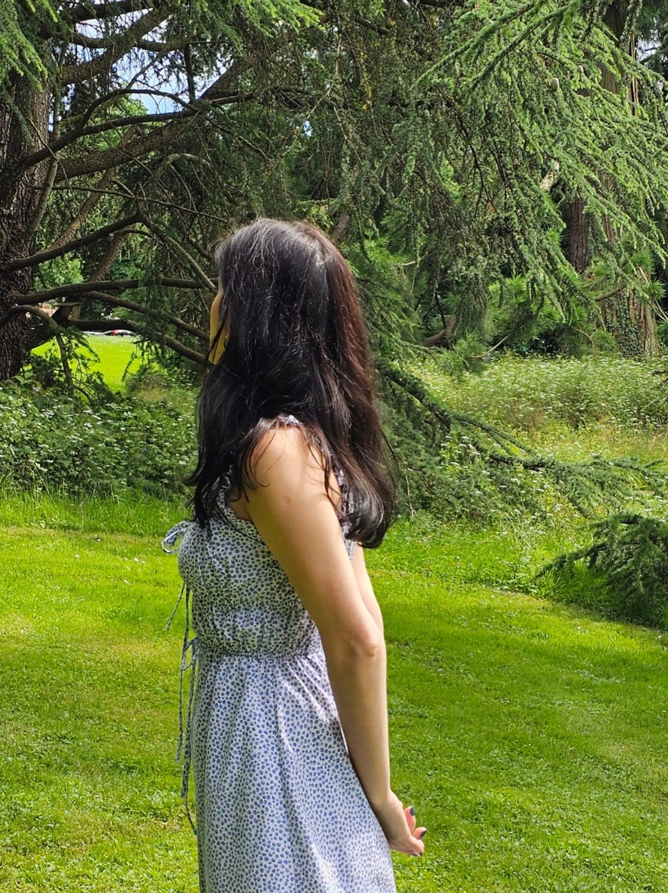

Sewing Club In Geneva
Hand made.
Hi, I’m Paz! I’m a self-taught sewist passionate about textiles, craftsmanship, and slow fashion. I love making, learning, and sharing the joy of sewing with others.
Explore my sewing work and join me for the Geneva Sewing Club, where we can learn, make, and sew together. 🤍
about
cut & sewn in the atelier
“I had never used a sewing machine. Six weeks later I wore my own dress to a wedding and spent the whole evening telling people I made it.”